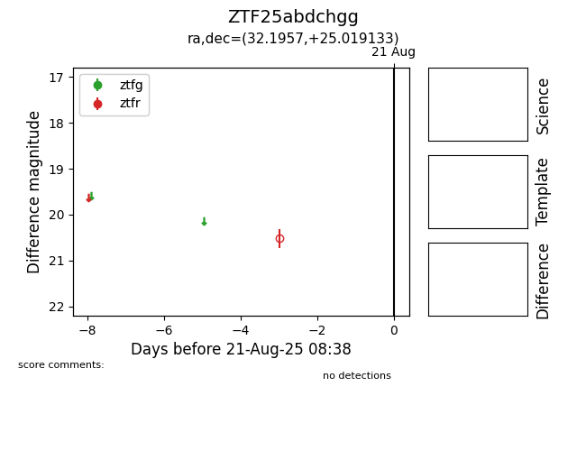

Target ZTF25abdchgg at 2025-08-21 08:38, see:
FINK: fink-portal.org/ZTF25abdchgg
Lasair: lasair-ztf.lsst.ac.uk/objects/ZTF25abdchgg
ALeRCE: alerce.online/object/ZTF25abdchgg
alt names
ZTF25abdchgg (ztf,alerce)
coordinates:
equatorial (ra, dec) = (32.1957,+25.01913)
galactic (l, b) = (144.3149,-34.62067)
photometry
